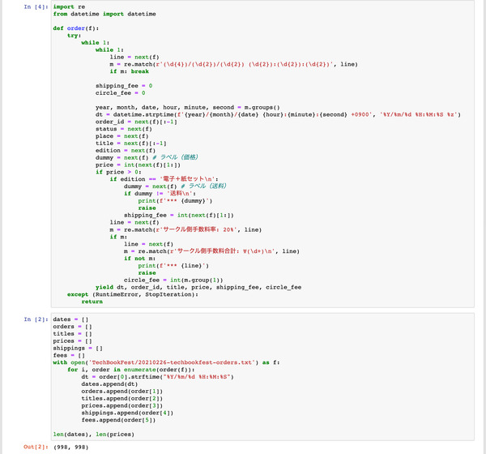
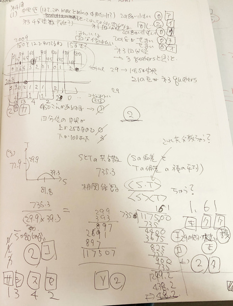

ZAF ２０２２年２月２３日
＜本日のテーマ＞
祝日も AI やるよ！
目次
YouTube のアーカイブ・ビデオはこちら
(
https://youtube.com/live/OfaAcO0_8RE)

前座の前座
アーティスト（？）
アーティスト（？）
- 先日、ツイッターのタイムラインに、以下の投稿が流れてきました

- 知らなかったけど、
次世代のインディーズ系音楽配信サービス、
ブロックチェーンによる
アーティストの新たなマネタイズ方法
- 知らなかったけど、
- ということで、
ブロックチェーンとか NFT とか
（技術的）興味あるし、
ってことで、いきなりですが
AUDIUS デビューしました！

- 「でも、あなたアーティストなの？」
「配信する音楽あるの？」
と思いますよね？ - 心配ご無用！
かれこれ５年以上前、ふと「作曲してみよう！」と思った時があって、
とりあえず３曲ちょっと、手持ちのネタがあるのです！

- そのときは
soundcloud デビューしました！

- ということで、そのときのアルバム（３曲しかない）でデビュー


- 今の時代、アーティスト（変なカタカナ語だと思ってますが）なんて
言ったモン勝ちですからね
ぼくも今日からは堂々とアーティストを名乗ろう（かな？） - ところで、上の曲のカバー写真を見てて、思い出しました
むかし 500px というサイトに写真アップしていたこと


- これで今日から堂々と写真家も名乗ろう（かな？）
- そんなこと言えば、そうそう、ぼくは作家でもあるんだった！


- ということで、技術書典の話につながりますっ


技術書典１２のまとめ

- 開催期間は、１月２２日（土）から１月３０日（日）まででした。
- つまり、前回の ZAF （１月２６日）は開催中でした。
- ということで、今回のまとめです


- ゼロからはじめる AI： 72 冊
- 音楽と数理： 14 冊（電子９冊、紙５冊）
- Jupyter Book: 8 冊
- 厳密な計算： 5 冊（電子４冊、紙１冊）
- ZAM 季報 VOL.1： 0 冊
- いつものように、時系列にならべてみました
- 技術書典１２期間中
- 初参加の技術書典９から今回まで
- 技術書典１２期間中


技術書典の売り上げの解析について
- ちなみに、このグラフは、技術書典の管理サイトに表示される
「売上管理」の「販売履歴」のページ

 でまとめた結果を、 matplotlib でプロットしたものです。

技術書典１２の感想
- 新刊がなかったこともあって、
各種イベント（刺されアワード）への応募をしなかったり、
そもそも SNS 上であんまり宣伝しなかったので、
これまでのイベントの中でも一番売り上げ少なかった……

- （無料ということもあるけど）
『ゼロからはじめる AI』は、すごい - 技術書典９からの累計ダウンロード数は 1,000 冊を超えました！

- 『Jupyter Book でAIの解説本を書く方法』もコンスタントに出ますね
- こちらも技術書典１０からの累計頒布数は 50 冊を超えました！
（ぼくの書いてる数理本について）

- やっぱり『音楽と数理』の方が受けがいいみたい

- 『厳密な計算』も、個人的には、良く書けたと思うんだけどなぁ……
- あと、紙の本は人気ないなぁ……ぼくは断然、紙派なんだけど
（やっぱり「技術書典」故なのか？）

- 理解できないのは『ZAM 季報 VOL.1』が、今回、一冊も出なかったこと……
- 特に、紙版を（今回は名目上の「新刊」として）出したんだけど……
- フルカラーの浮世絵がいっぱいって、あんまり魅力じゃないのかな？
ZAM 季報の価格を改定！
ということで、 ZAM 季報の価格を改定することにした。
- 紙版を継続販売している BOOTH にて、
これまで 2,000 円としていた『ZAM 季報 VOL.1』を、なんと1,500 円に値下げ！ - あわせて、手元に残っている『月刊 ZAM』の印刷版の価格も
1,000 円としていたところを


- 技術書典サイトで継続販売中の「電子版」『ZAM 季報 VOL.1』も値下げ
これまで 1,000 円としていた値段を750 円に値下げ！


まとめ
技術書典１３には新刊を出すぞ！
みんさんも、執筆してみませんか？
みんさんも、執筆してみませんか？
2022年のセンター試験
数学 I に挑戦前座
数学 I に挑戦前座
- 中日新聞のサイト
https://edu.chunichi.co.jp/pages/kyotsu2022/


その前に、
そもそも、なぜ、センター試験？
- ニュースで目にした
- ぼくが別でやっている英会話サークル（英語結社！） SpeakEZ NEO


- 今時はリスニングもあるんだね、とかいいながら
- こう見えても、一応、海外（英語圏）に約１０年間くらしてたりしたので、
当然、
１００点満点を目指して！
- その結果……
- リーティング

- リスニング

- リーティング


英語のテストの感想
- リスニングの進行が、早い（ところがあって焦った）
- というか、考える時間がどれくらいあるのか、事前に分からないの、 結構プレッシャーだな、と
- リーティングは、会話ばっかりだな、と思った
- というか、文法問題って１つもなかったけど、
こういう出題に向けた高校の英語の受験勉強って、
一体どうやってるんだろう？- （雰囲気翻訳のノリでやってたりするのか？）
- とか言っても、自分の結果が、スゲ〜悔しかった
- 要するに、
数学なら満点とれるだろう
- （一応、こう見えても、理学部物理学科で博士号をとって、 研究者稼業も１０年以上やってたので）
2022年センター試験、数学 I チャレンジ

- まずは結果から


第１問〔１〕


- ノート
- 代数の問題（式変形のテスト）、まぁ、力技でガンガン計算すればいいだろう。
- (1)
- まずは \(ab + bc + ca\) の値を求めろ、と。
- \(a+b+c = 1\) なので、両辺を自乗して \(\left(a^2+b^2+c^2\right)^2 = 1\) となる。
- 左辺を展開して
\(a^2 + b^2 + c^2 + 2(ab + bc + ca)\)- これは、公式覚えてなくても、計算すればよい
- ここで \(a^2 + b^2 + c^2 = 13\) と与えられてるので、
\(13 + 2(ab + bc + ca) = 1\) となって、答え
\[ ab + bc + ca = -6 \]
- 次に \((a-b)^2 + (b-c)^2 + (c-a)^2\) の値を求めろ、と。
- なんか上手いアイデアあるのかな、とも思うが、まずは展開しちまえ、と
\[ (a-b)^2 + (b-c)^2 + (c-a)^2 = 2\left(a^2 + b^2 + c^2\right) -2\left(ab + bc + ca\right) \] - ってことで、やっぱり、式の展開をきちんとできるかどうかの確認でしたね
\[ (a-b)^2 + (b-c)^2 + (c-a)^2 = 2\cdot13 -2\cdot(-6) = 38 \]
- なんか上手いアイデアあるのかな、とも思うが、まずは展開しちまえ、と
- まずは \(ab + bc + ca\) の値を求めろ、と。
- (2) 条件①と②はそのままで、
さらに \(a-b = 2\sqrt{5}\) とする、と。
- 最終的には \((a-b)(b-c)(c-a)\) を求めさせたい、と
- この３つの部分を、以下のように置く、と
- \(x = b-c\)
- \(y = c-a\)
- \(z = a-b\) これは、まぁ、こうおいておく方がいいだろう、と。
- ３つは互い違いになってるので、３つまとめると、
なにかときれいにならない
でも２つだけ、例えば \(x\) と \(y\) についてみると、
共に \(c\) を含んでるので \(c\) を消せるので、
あぁ、それで \(a - c\) を与えてるのね、と
\[ x + y = b - a = -(a-b) = -2\sqrt{5} \] - 次に \(x^2 + y^2\) を計算せよ、と
(1) で求めさせたのが、結局 \(x^2 + y^2 + z^2 = 38\) なので、
\[ \begin{eqnarray} x^2 + y^2 &=& 38 - z^2\\ &=&38 - \left(2\sqrt{5}\right)^2\\ &=& 18 \end{eqnarray} \] - ここから \(x y z\) の値を求めよ、と
- \(z\) は与えられてるので、\(xy\) の値が求まれば良い、
ということで \((x+y)^2\) を計算してみると
\(x^2 + y^2 + 2xy\) なので
\[ \begin{eqnarray} xy &=& \frac{(x+y)^2 - \left(x^2 + y^2\right)}{2}\\ &=& \frac{\left(-2\sqrt{5}\right)^2 - 18}{2}\\ &=& 1 \end{eqnarray} \] - ってことで、答えは \[ xyz = 2\sqrt{5} \]
第１問〔２〕


- ノート
- 太郎と花子の小芝居、いるのかな？
とりあえず計算すれば終わりだ- ２次方程式の解の公式、ぼくは記憶にあったのでそれだけ
もし記憶から飛んでたら、これ、どうやって導出したんだっけ？ 平方完成させる方針で式変形すれば行けるんだったっけな？
（公式忘れた大人の人たちは、がんばってください） - ２次方程式 \(x^2 + px + r = 0\) の解は \[ x = \frac{-p\pm\sqrt{p^2-4r}}{2} \]
- \(D_1\) は、いわゆる判別式、上のルートの中身で、 こいつが負のときルートが虚数になるってやつ \[ D_1 = p^2-4r \]
- 「x軸と共有点を持つ」という表現が曖昧に思えるが、
「交点を持つ、あるいは接する」ってこと、つまり実根を持つ、
なのかな、と解釈して、
「２つのうち少なくとも１つは」の条件は、 \[D_1 \ge 0 \text{ or } D_2 \ge 0\] （つまり⑧） - その逆は \[D_1 < 0 \text{ and } D_2 < 0\] （つまり⓪）
- このとき \(D_1 + D_2 < 0\) なので①
- ２次方程式の解の公式、ぼくは記憶にあったのでそれだけ
第２問〔１〕


- ノート

- これは、縦と横の縮尺が違うことに注意せよ、という問題（？）
- つまり縦方向は４倍になっている（105 / 25,000）
- その縮尺で角度が 16 度、ということで、
求めるのが（sin とかじゃなくて） tan なので、 値を単純に 1/4 すればよいだけ - 数表から tan 16o の値を読むと「0.2867」
- その 1/4 は「0.0716...」なので \(0.072\) が答え
- この値を数表の tan から読むと 4o と 5o の間
（つまり②）

第２問〔２〕(1)

- ノート

- さて、問題の円に内接する三角形。
ここまで順番に回答してきたが、ここで詰まる…… - とはいえ、最初の sin を求めるのは（ cos の値が与えられているので）できる
つまり \(\sin^2 \angle\rm{ABC} + \cos^2 \angle\rm{ABC} = 1\) ですね、と \[ \sin\angle\rm{ABC} = \sqrt{1-\cos^2\angle\rm{ABC}} = \sqrt{1 - \frac{3}{9}} = \frac{\sqrt{6}}{3} \] - で、だ。ここで、 AC と BC の長さの比が与えられてるだけ。
これで AB と AC の長さを出せ、と - 普通の三角形で、２辺の長さとその成す角が決まれば、
三角形は一意に決まるのは知ってる。
今は円に内接する、という余分な条件があるので、
２辺の長さじゃなくて、比さえ与えられれば、三角形が決まる、ということみたい - でも、これ、どう攻めるのか？
- 分からないので、次に進むことにする。（くやしい……）

第２問〔２〕(2)

- ノート
- さて、円に内接する三角形、ということは引き続きで、
しかし与えられる条件は (1) のものは忘れて、新しく考えましょう、 ということだね。 - 今回の条件は、 AB = 5, AC = 4 と、 ２辺の長さ（だけ）が与えられている、か。
- この条件だけで三角形が決まるってことか？
- 少なくとも \(\sin\angle\rm{ABC}\) と、
A から BC に下ろした垂線の交点 D までの距離は、求まるらしい、
この条件だけから…… - 全然、分からん……
- これが問題の前半 (i)
- 後半 (ii) は、 AB と AC に対する条件を緩めて
\(2 AB + AC =14\) として、
この場合になんと \(AD = p\ AB^2 + q\ AB\) みたいに \(AB\) の２次式で
（しかも、マークシートの状況から、係数は簡単な分数で！）書けるだと？ - 最終的に、三角形の面積を求めさせてる。 つまり \(BC\) の長さも、この条件だけから求まるってことだよね？
- 前半 (i) も分からないので、 (ii) は分かるわけない
- 付記：試行錯誤してる段階で、気づいた。
(i) は (ii) の特別な場合、つまり含まれていた。
最初から気づくべきポイントでしたが （気づいたからといって、解法に関する手がかりではないけれど）
- 付記：試行錯誤してる段階で、気づいた。
- 一生懸命、円に内接する三角形の性質について、思い出そうとしているが、
ここではとりあえず諦めて、先に進むことにした。（くやしい……）
第３問〔１〕


- ノート

- これも、第１問と似た問題というか、２次方程式の問題だな。 カリキュラム的に、別のカテゴリってことになってるのかな？
- ２次方程式を、１次式の積と捉えて考える、という話。
- つまり \(l: y = ax + b\) と \(m: y = cx + d\)
の２つの一次方程式（直線）があって、
それぞれの解（x 軸との交点）を s と t とする。
もちろん解けて、\(s = -\frac{b}{a}\) と \(t = -\frac{d}{c}\) となる。
当然 \(a\neq 0, c\neq 0\) （これらが 0 だと １次方程式は定数になるだけだからね） - 便宜上の条件がいくつか導入されてるが、
\(s < t\) は、まぁ２つの直線の左右関係を一意にする程度の意味だけど、
これらの直線が「 \(y > 0\) で y 軸と交わる」というのは、でかい仮定だな。
（式で言うと、当然 \(b > 0, d > 0\) ということになる）
このせいで（おかげで）場合分けが問題に示される（あ）（い）（う）（え）（お） で網羅されることになる。
つまり、もしこの図が問題に与えられずに、問題を解け、となったとしたら、 学生さん結構大変だったんじゃないかな、と。
- つまり \(l: y = ax + b\) と \(m: y = cx + d\)
の２つの一次方程式（直線）があって、
- (1) は、２次方程式の最大値、最小値のはなし。
- ２つの一次式の積、と言う形にまとめたので、見通しが良くなっていて
２次方程式の解（x 軸との交点）２つが s と t になることは自明で、
最大 or 最小はそのちょうど中間にくることになる。 - 最大か最小かについては、
x の値の３つの領域（というか、真ん中の領域 \(s \lt x \lt t\)）の符号を
確認すればよい
正なら極大、負なら極小 - なので、(i) は \(x = 2\) で最大値、
- (ii) は \(x = 7\) で最小値を持つ。
- (2) も同様に考えれば良くて、
\(s = -1\) で「最大値」が \(x = 0\) となるのは \(t = 1\)、
\(x = 10\) となるのは（そこが -1 に対して中央になるのは） \(t = 21\) となるので、
t のとりうる範囲は \(-1 \lt t \lt 21\) ということになる。 - (3) は、上に行ったように s と t で区切られる３つの領域の
各一次式の符号を考えれば分かる。
最大値をとるのは \(s \lt x \lt t\) で正となるものなので、（あ）だけ
最小値をとるのは、それ以外ということになる。 - 最小値が正になるものは、今の場合、実根を２つ持つ２次方程式なので、なし
最小値が \(x\gt0\) になるものは、（い）と（え）の２つ。
あれだね、 s が負で t が正となるいやらしい場合が、 各１次式が \(y\gt0\) で交わるという制限でなくなってて、 気にしなくてよかった。
- ２つの一次式の積、と言う形にまとめたので、見通しが良くなっていて

ここで一息
- 予想外に苦戦して、時間がかなりかかった。
ここで一旦、終了にして、日常生活に戻り、
翌日、ここから再開する
第３問〔２〕


- ノート

- これも２次方程式のはなし。
ここでは２つの２次方程式、と言う話になっている（けど、２次方程式）。
- 後知恵的に振り返ると、
(1) は普通に２つの２次方程式の解の数に注意を向けるはなし、
(2) は解の数が４じゃなくて３の場合にどうなりますか？というはなし、
この (2) が、なんか難しかったぞ（なんかミスってるかな？）
- 後知恵的に振り返ると、
- (1) は、普通にそれぞれの方程式を解いて、
\(x^2 + 4x -4 = 0\) の解は \(x = -2\pm2\sqrt{2}\)
\(x^2 - 4x +4 = 0\) の解は、こいつ実は重根で、
実際、因数分解できて \((x-2)^2 = 0\) つまり \(x = 2\)
なので２つ合わせて、解の数は３つ - (2) \(p=-6\) の時、２つの方程式の判別式を計算すると、
\(D_1 = 9-q, D_2 = q^2+24\) となる。- 解が３つ、というのが、２実根と重根だとすると、
\(D_1=0, D_2\gt 0\) or \(D_1\gt 0, D_2=0\) となる。 - \(D_1=0, D_2\gt 0\) のとき、
\(q=9\) となり、これは \(D_2\gt 0\) を満たす。 - \(D_1\gt 0, D_2=0\) のとき、
\(q = \sqrt{24}\) で、\(D_1 = 9-q \gt 0\) を満たす。
この２つか？でもこいつは整数じゃないぞ？（マークシートに書けない…）- とノートに書いているが、ここ、明らかに間違ってるね
\(D_2 = 0\) から \(q = \sqrt{-24}\) と虚数になります。
つまりこっちの条件を満たす実数 q は、存在しない。 - ノートでは、結局、この計算を破棄して、
「ガイドに従う」計算を続けてました。
（でも、そのラインも放棄してるな……）
- とノートに書いているが、ここ、明らかに間違ってるね
- ここで気づく、２実根が２つある場合に、 その１つが重複している場合として、解の数が３つになる場合がある、と。
- えーい、面倒だ、解が重複している条件を直接、書いちまえっ、と
\(3\pm\sqrt{9-q} = \frac{1}{2}(-q\pm\sqrt{q^2+24})\)
複合が左右あるので、まぁ４通りを計算しないといけないが、面倒だよね - q の範囲として、\(9-q\gt0\) ってのがある。
つまり（マークシートで q は整数なので） q = 1, 2, 3, 4, 5, 6, 7, 8 をチェックすればよい！（ズル）
で、実際にノートにあるように計算した。
その結果、みつけた！ \(q = 5\) だ！ - ということで、(2) の答えは \(q = 5 \text{ or } 9\)
- 解が３つ、というのが、２実根と重根だとすると、
- (3) は、２次関数の各係数の変化がグラフにどう現れるのかを問うている。
- ③のグラフ \(y=x^2 -6x + q\) で q を増やす、というのは、
定数項を増やすということなので、
グラフは形状を保ったまま上に上がっていくだけ、（６） - ④のグラフ \(y=x^2 +qx -6\) については、
頂点の場所を考えるために、解の公式から、
\(x = \frac{1}{2}(-q\pm\sqrt{q^2+24})\)
頂点の x 座標は \(x = -q\) なので、左右については左に（小さい方に）
縦方向の移動は、この値を代入すれば良くて、
\(y^* = q^2 - q^2 - 6 = -6\) と、q によらず一定、か
（ノートにもコメントした通り、幅は広くなるけど、グラフの選択肢にない…）
ということで、 q を増やすとグラフは左にシフト、なので（３）- ここが間違い…
正解は（１）、なのか？（まだ分かってない…）
- ここが間違い…
- 付記（2022/3/4）：間違い分かった。
- まず、頂点の x 座標の位置は \(x = -q\) ではなく \[ x = -\frac{q}{2} \] でした。
- 従って、この時の y の値は \(y^* = -6\) ではなく、 \[ \begin{eqnarray} y^* &=& \left(-\frac{q}{2}\right)^2 + q \left(-\frac{q}{2}\right) - 6\\ &=& -\frac{q}{2}\left(-\frac{q}{2} + q\right) - 6\\ &=& -\frac{q^2}{4} - 6 \end{eqnarray} \] と \(q\) が \(q = 1\) から増加するにつれて、減少していくことになる。
- つまり（１）が正解でした。はい。理解した。
- あと二次曲線の広がりかたがデカくなる、という主張は
（上は、頂点の \(y\) が一定で、 \(y = 0\) の２つの解の幅がでかくなるから、 ということからではあるが）間違いね。そこは \(x^2\) の係数が同じなら、変わるわけないです。 はい。
- ③のグラフ \(y=x^2 -6x + q\) で q を増やす、というのは、
定数項を増やすということなので、
- (4) は、 q の範囲が (2) で求めた解の数が３つになる二つの場合の間で
変化するときの挙動について。
- ２次方程式で、下に凸なので、 y が負の領域というのは ２実根の間か、重根の点、ということになる。
- q = 5 と q = 9 の時の状況は、ノートに書いた通り。
- (3) でみた通りで、 q を 5 から増やしていくことを考えると、
グラフ③は上に上がるだけ （つまり２重根の状態から、重根の状態に移りゆく）
グラフ④は左にシフトしていきつつ、幅が広がる - この時、グラフ③の２実根の間の領域を A、
グラフ④の２実根の間の領域を B とすると、
A と B は \(5\gt q\gt 9\) の間、常に重なりを持つが、
ふむ、途中から A は B に包含されるが、常に包含関係にあるわけではないな - 従って \(x \in A\) は \(x \in B\) であるための
なんの条件にもなってない、つまり（３）が正解だったか
- ノートには「必要だけど十分じゃない」と書いてたけど、
この時の思い込みは、うむ、何考えてたのか分からん……
（左の絵を書いてるけど、これを A が B の中にあると 思い込んでたか？）
- ノートには「必要だけど十分じゃない」と書いてたけど、
- 一方、 \(x \in B\) は \(x \in \bar{A}\) の、どういう条件だ？
- 左の図（q = 5）では、十分条件ですね
- 右の図（q = 9）では、この時やっと十分条件になる
- けれど右の図の直前では、 B の領域は A と重複するよね
- すると、なんでもない（３）じゃないのかな？やっぱり
（ここではノート書いた時とは違う考え方してる気がするが） - でも、正解はこれ「十分条件ではあるが必要条件ではない」（１）らしい
- 付記：なんか、グラフをプロットしてみればはっきりするが、 勘違いしてるところがあるな、きっと

第４問


- ノート
 - もうここは、「四分位」ってなに？って感じだったので
（勝手に想像して回答したけど）
振り返る気もしないので、パス
ここで一息、パート２
- 問題、やっと最後まできた。
けど第２問〔２〕「円に内接する三角形の問題」はほとんど解けてない……
ということで、後日、時間無制限で挑戦する。第２問〔２〕円に内接する三角形の問題、無制限一本勝負
問題 (2) の (i) とノート１
|
|

|
- 第２問〔２〕円に内接する三角形の問題、無制限一本勝負
- まずは (2) にフォーカスする
- というのは (1) は難しそうだから。
（比が与えられてる、というのが具体的に考えにくいから）
- というのは (1) は難しそうだから。
- まずは (2) にフォーカスする
- 思い出した円に内接する三角形の性質
円周上の点から他の２点の成す角は、 を考えて、 中心 O をあからさまに書いて、３つの三角形に分割してみた。
その２点が中心から成す角の半分 - アプローチ１：加法定理を使う方向性
- 面倒なので角度を以下のように置く \[ \begin{eqnarray} a &:=& \angle\rm{BAC}\\ b &:=& \angle\rm{ABC}\\ c &:=& \angle\rm{ACB} \end{eqnarray} \]
- あと、この 中心 O を含む３つの二等辺三角形の角度を以下のように置く \[ \begin{eqnarray} a_1 &:=& \angle\rm{OAB} = \angle\rm{OBA}\\ b_1 &:=& \angle\rm{OBC} = \angle\rm{OCB}\\ c_1 &:=& \angle\rm{OCA} = \angle\rm{OAC} \end{eqnarray} \]
- 当然、以下の関係が成り立つ。
\[
\begin{eqnarray}
a &=& a_1 + c_1\\
b &=& b_1 + a_1\\
c &=& c_1 + b_1
\end{eqnarray}
\]
- ふむふむ、加法定理を使いたくなるね
- ３つの二等辺三角形（等しい２辺の長さは円の半径 3）を
書き出して並べてみると、
中心までの距離が与えられてる２つの三角形 （AB = 5, AC = 4）については、高さが決まるじゃん！- ABO の高さは \(\sqrt{11}/2\)
- ACO の高さは \(\sqrt{5}\)
- 付記：ノートには書いてないが（このときは、その考えがなかったということ）
これらの２つの三角形から、角度 c と b に関する sin と cos も直接求まるね \[ \begin{eqnarray} \sin c = \frac{5/2}{3},&\quad& \cos c = \frac{\sqrt{11}/2}{3}\\ \sin b = \frac{2}{3},&\quad& \cos b = \frac{\sqrt{5}}{3} \end{eqnarray} \]- つまり、求める答え \(\sin\angle\rm{ABC} = \sin b = 2/3\) が求まる！
- 角度 \(a_1, c_1\) の sin と cos が分かったので、 加法定理を使えば \(a = \angle\rm{BAC}\) の sin と cos は求まる \[ \begin{eqnarray} && \sin a = \sin\left(a_1 + c_1\right) = \sin a_1 \cos c_1 + \cos a_1 \sin c_1\\ &=& \frac{\sqrt{11}/2}{3} \frac{2}{3} + \frac{5/2}{3} \frac{\sqrt{5}}{3} = \frac{1}{9} \left( \sqrt{11} + \frac{5\sqrt{5}}{2} \right) \end{eqnarray} \]
- でも、欲しいのはこれじゃない。
と \(\sin b\) を分解しようとするが、角度 \(b_1\) の sin と cos が 分かってなかった……
- アプローチ２：作図で考える方向
- ここで、視点を変えて、図を書き直してみる。
ノートの「まってまって」の部分！- ここでの図の書き方が、実際のところ、ノートの「付記」にコメントした通り
誤解だったのだけど、
今まとめるに際して見直したところ、 この図において上に指摘した誤解は、そこにノートで行った計算に関係ない、
従って、この (2) の問いに関する正しい解答になっていることが分かった - まず、図の何が誤解だったかについて：
- モティベーションが「点 B を基準に物事を見直そう」で、
その結果として x 軸上（つまり (-3, 0) の点）に B を設定した。 - その後 A と C を図のように置いたが、
この置き方は垂直に置いた。
その後に続く計算において、この性質を使ってあれこれやってる。 - しかし今の状況、つまり AB と AC の長さが違う（！）場合、
AC を垂直に置くと、 B は x 軸上に乗らないよね、
という認識が、ノートの「付記」で書いたこと。
- モティベーションが「点 B を基準に物事を見直そう」で、
- 次に、なぜ結果が正しかったのかについて：
- 作図に伴った計算で使った性質が、しかし、 点 B が x 軸に乗っている、ということに依らないから。
- つまり、使ってる情報は AC を y 軸に並行にとった、 ということだけ。
- ここでの図の書き方が、実際のところ、ノートの「付記」にコメントした通り
誤解だったのだけど、
- 話を戻して、 AC を x 軸に垂直に置いてみる、ということから始める。
すると、
- AC の中点、 x 軸との交点を仮に H として置いて、
ノートのこの部分で角度を \(\theta := \angle\rm{ABC}\) と置いていて、
あと AH の長さを \(l\) と置く - この時 \(\angle\rm{AOH}\) は \(\angle\rm{ABC} = \theta\) と等しいじゃん！
- 従って \[ \begin{eqnarray} l = 3 \sin\theta\\ \sin\theta = \frac{2}{3} \end{eqnarray} \]
- おぉ、すると、ノートの作図で赤く書いたように、
三角形 BAD は直角三角形なので、 \[ \rm{AD} = 5\sin\angle\rm{ABC} = \frac{10}{3} \]
- AC の中点、 x 軸との交点を仮に H として置いて、
- ここで、視点を変えて、図を書き直してみる。
問題 (1) とノート２
|
|
- (2) の (i) が解けた（と思ってた）ので、
ちょっと状況が分かってきたと思ったし、(1) の問題に戻ってみる。 - 与えられた条件が \[ \begin{eqnarray} && \cos c = \frac{\sqrt{3}}{3}\\ && \rm{AC} : \rm{BC} = \sqrt{3} : 2 \end{eqnarray} \]
- 最初の条件から、その角度の sin を求めるのは簡単（上で既に解いてる） \[ \cos c = \frac{\sqrt{3}}{3} \quad\Rightarrow\quad \sin c = \sqrt{1-\frac{3}{9}} = \frac{\sqrt{6}}{3} \]
- さて、ここから、２つの辺 AB と AC の長さを求めろ、というのが問い。
(2) の (i) でやったように、中心 O に関して３つの三角形に分割してみる。
与えられている２辺 AC と BC の長さに関する条件が比なので、 パラメータ \(l\) を導入。 - おぉ、すると \(\sin c\) は三角形 OAB を睨むと \[ \sin c = \frac{\rm{AB}/2}{3} = \frac{\sqrt{6}}{3} \] なので、あれれ、 AB は求まった！ \[ \rm{AB} = 2\sqrt{6} \]
- そして、残るのは AC の長さか…
- パラメータ \(l\) を決める必要があって、
その条件は、三角形が半径３の円に接する、ということなのは ロジックとして分かる。- フォーラムで喋った大学の数学科の同級生の友人の言葉を思い出したのは、
ここで行き詰まった時のこと。
条件が揃ってそうなら、そして計算できることがあるなら、 まず計算してみればよい、
それがスマートな解法か、正しいアプローチか、とか置いておいて
- フォーラムで喋った大学の数学科の同級生の友人の言葉を思い出したのは、
ここで行き詰まった時のこと。
- 三角形 OBC と OCA の高さをそれぞれ \(p\) と \(q\) と置く。
- まず思いつくのは (2) の (i) で考えた加法定理を使うこと
- 今 \(\sin c\) の値は求まったので、 角度 \(c\) が \(c_1 + b_1\) ということから、 \[ \begin{eqnarray} \sin c &=& \sin\left(c_1 + b_1\right)\\ &=& \sin c_1 \cos b_1 + \cos c_1 \sin b_1 \\ &=& \frac{q}{3} \frac{2l}{3} + \frac{\sqrt{3}l}{3} \frac{p}{3} = \frac{\sqrt{6}}{3} \end{eqnarray} \] まとめると \[ 2lq + \sqrt{3}lp = 3\sqrt{6} \]
- 二つ余分なパラメータ \(p, q\) を導入したので、
これを消す必要がある
- 図を睨んで、直角三角形なので、 \[ \begin{eqnarray} 4l^2 + p^2 = 3^2\\ 3l^2 + q^2 = 3^2 \end{eqnarray} \] ここから \(p, q\) がそれぞれ \(l\) で書ける \[ \begin{eqnarray} p^2 &=& 9 - 4l^2\\ q^2 &=& 9 - 3l^2 \end{eqnarray} \]
- まとめると、 \(l\) を決定すべき式として以下が出てくる \[ 2l\sqrt{9-3l^2} + \sqrt{3}l\sqrt{9-4l^2} = 3\sqrt{6} \]
- この式をこねくり回すが、ルート含んだ式の計算、面倒だよな
（できない……）
BC の値は \(コ\sqrt{サ}\) という形に、最終的にはなるはずなんだが、ね - ということで、再び問題 (1) から一時撤退。
問題 (2) の (ii) とノート３
|
|
- 先に進む。問題 (2) の (ii)
状況は、BC に A から垂線を下ろした点 D を考えて、
ここで２つの辺 AB と AC の値が指定される代わりに、以下の関係を満たす、 というもの。 \[ 2\rm{AB} + \rm{AC} = 14 \] - 最初の問いは、この時 AB のとりうる範囲は何か？
- まず、円の中に三角形が含まれるということ以外は何も考えないと、
\[
\begin{eqnarray}
&& 0 \le \rm{AB} \le 6\\
&& 0 \le \rm{AC} \le 6
\end{eqnarray}
\]
となる。
先の条件式から \[ 2\rm{AB} = 14 - \rm{AC} \] なので、 AB の範囲を考えると、 \[ 4 \le \rm{AB} \le 7 \] - ノートに記載があるが、
実はこのとき \(\rm{AB}\) 自身の制限を考え忘れてた。
（円の外に出てしまいます。）
解答は以下： \[ 4 \le \rm{AB} \le 6 \]- cf. 「問題 (2) の (ii) のつづき、ノート６〜（泥沼の計算地獄）」での最後の部分では、きちんと認識してます。
- さて、次に聞かれてるのは、辺 \(\rm{AD}\) の長さに関するもので、
これが、一般に（？） \(\rm{AB}\) の２次式で表せるのか？ - 辺の長さに関しては、直角三角形の性質だろうな
\[
\rm{AD}^2 = \rm{AB}^2 - \rm{BD}^2
\]
ここで \(\rm{BC} = \rm{BC} - \rm{CD}\) だ。
\(\rm{CD}\) が余分なものだけど、これに関しては \[ \rm{CD}^2 = \rm{AC}^2 - \rm{AD}^2 \] が（少なくとも）ある。 - うーむ、しかし、そもそも \(\rm{AD}\) を \(\rm{AB}\) と \(\rm{AC}\) だけで書けるのか？ （と、ノートで叫んでる！）
- 途方に暮れつつ、あれこれ、作図などしている……
問題 (2) の (ii) のつづき、ノート４
- ここで、再び、大学の同級生ことを思い出す。
綺麗に解けなくても、論理的に求まるのならば、
どんなに泥臭くなっても、計算してしまえ！ - つまり、今の問題 (2) の建て付けにおいて、
- 円の内接三角形に関しては、
- ２辺の長さを指定しただけで、三角形は決まる。
- もっと言うと、 円周に乗った２点に対して、 一方の点からの距離を決めれば、他方の点は一意に決まるよね、と。
- 式にのせると、\(\rm{A}\) を \((-3, 0)\) に置くとして、
長さ \(p = \rm{AB}\) を指定した時、
\(\rm{B}\) の座標 \((x, y)\) は、求まる。
- つまり \[ \begin{eqnarray} x^2 + y^2 = 9\\ p^2 = (x+3)^3 + y^2 \end{eqnarray} \]
- \(y^2 = 9 - x^2\) を使って \(y\) を消すと、
\[
\begin{eqnarray}
p^2 &=& (x+3)^2 + 9-x^2\\
&=& 6x + 18
\end{eqnarray}
\]
から
\[
x_\rm{B} = \frac{p^2}{6} - 3
\]
- 注：ここの部分のノート、符号が間違ってるね。
- 従って、この後の計算も、ノートは間違いってことだ。
- ここの計算は、正しい（はず）。
- \(y_\rm{B}\) は、この結果を代入して \[ \begin{eqnarray} y_\rm{B}^2 &=& 9 - \left(\frac{p^2}{6} - 3\right)^2\\ &=& 9 - \left(\frac{p^4}{36} - p^2 + 9\right)\\ &=& p^2 \left(1 - \frac{p^2}{36}\right)\\ &=& p^2 \left(1 + \frac{p}{6}\right) \left(1 - \frac{p}{6}\right) \end{eqnarray} \]
- つまり点 \(\rm{B}\) の座標は \(p\) を使って、次のようにかける：
\[
x_\rm{B} = \frac{p^2}{6} - 3,\quad
y_\rm{B}^2 = p^2
\left(1 + \frac{p}{6}\right)\left(1 - \frac{p}{6}\right)
\]
- 実際、
\(p = 0\) で \(\rm{B}\) の座標は \((-3, 0)\)
\(p = 6\) で \(\rm{B}\) の座標は \((3, 0)\)
となる。
- 実際、
- 同様に、\(\rm{AC}\) の長さを \(q\) とすると、 点 \(\rm{C}\) の座標は、 \[ x_\rm{C} = \frac{q^2}{6} - 3,\quad y_\rm{C}^2 = q^2 \left(1 + \frac{q}{6}\right)\left(1 - \frac{q}{6}\right) \] と書ける。
- これで、２辺の長さを決めることで、３点の座標が代数的に求まった。
- ぶっちゃけて言えば、あとは、ここから点 \(\rm{D}\) の座標を求めれば、 答えられるね、と。
- （ノートでは、別の文脈のトライとして、 作図の方からあれこれ模索している。）
- ここで、また日常生活に一時もどって、続きはまた後で。
問題 (2) の (ii) のつづき、ノート５
- 先のノートの計算（力業）を、改めて清書したノート。
- はい、上の間違いがきちんと直ってます。
問題 (2) の (ii) のつづき、ノート６〜（泥沼の計算地獄）
-
ここから、なんとか楽して、直交点 \(\rm{D}\) を計算しようとして、
図形の関係から \(\rm{BC}\) と x 軸の交点（これを \(\rm{E}\) と置いてる） の座標が分かれば解決、と言って、
頑張って計算しているけど、
なんか、どうしても、\(\rm{AD}\) が \(\rm{AB}\) 、つまり \(p\) の ２次式できれいになりそうになく、挫折…… - 途方にくれてたら、はたと気づいた！
問題 (i) の設定 \(\rm{AB} = 5, \rm{AC}=4\) は、 じゃないですかっ！
問題 (ii) の条件 \(2\rm{AB} + \rm{AC} = 14\) を、
満たしている！ - つまり、このとき \(\rm{AB}^2 = 25\) で、
\(\rm{AD} = \frac{10}{3}\) なのが分かってるので、
\[
\rm{AD} = a\ \rm{AB}^2 + b\ \rm{AB}
\]
と、変数 \(a, b\) を置いて、
\[
\frac{10}{3} = 25 a + 5 b
\]
あてずっぽうで、分母が３だとして、
\(a = \frac{a'}{3}, b = \frac{b'}{3}\) と思うと、
\[
2 = 5 a' + b'
\]
一番単純な選択肢として、\(a' = -1\) としたら \(b' = 7\) となって、
後知恵だが、これが実際の答えだった、と。- ノートでは、すんなり \[ a = \frac{-1}{3}, b = \frac{7}{3} \] と書いてるが、これ、どうやって書いたのか （後で戻って書き足した？） 記憶にないので、上に書いたのは想像。
- あとここで、\(\rm{AC}\) と \(\rm{AB}\) のグラフを
（手を抜かないで）きちんと書いて、
ちゃんと \(\rm{AB}\) の上限が６だって、認識してますね。- cf. 「問題 (2) の (ii) とノート３」 での試み（のミス）
ここで一息、パート３
- 日付を改め、今一度、リフレッシュして状況を考え直してみる。
問題 (2) の (i) のつづき、ノート 2022/2/8 の１
- 問題 (2) の (i) に戻って、考え直してみる。
- 作図して、あれこれ考えつつ……
- 先の「泥沼の計算」に陥ったときのアイデアは、
円に内接する三角形は２辺の長さを指定しただけで決まる ことを、式にした。
もっと言うと、
円周上の２点は、一点を固定して距離を決めれば他方の点は一意に決まる - この状況をもうちょっと考えると、
円周上に固定した１点を通る直線の、もう一方の交点との距離は、一意
（円の上半分を考えることにして） - そしたら、もっと単純なセットアップでいい気がしてきた。
つまり「距離」をパラメータにしないで、角度を媒介変数的に導入すれば、 あら、これ簡単じゃん。
というのが、このノートの真ん中の図。 - あちこち点を飛ばして申し訳ないですが、
固定点 \(\rm{A}\) を \((+3, 0)\) として、
移動点 \(\rm{B}\) を、その成す角 \(\theta\) で特徴付けるとする。 \[ x_\rm{B} = 3\cos\theta, y_\rm{B} = 3\sin\theta \] このとき、 \(\rm{AB}\) の長さは、 \[ \begin{eqnarray} \rm{AB}^2 &=& \left[3\left(1-\cos\theta\right)\right]^2 + \left(3\sin\theta\right)^2\\ &=& 18\left(1 - \cos\theta\right) \end{eqnarray} \] と、すごくシンプルに書ける。 - このとき、 (i) の与えられた条件
\(\rm{AB} = 5, \rm{AC} = 4\) を、
角度 \(\alpha\) を点 \(\rm{A}\) から \(\rm{B}\) までの角度、
角度 \(\beta\) を点 \(\rm{A}\) から \(\rm{C}\) までの角度とすると、 \[ \begin{eqnarray} \rm{AB}^2 = 25 = 18\left(1-\cos\alpha\right)\\ \rm{AC}^2 = 16 = 18\left(1-\cos\beta\right) \end{eqnarray} \] から、 \[ \begin{eqnarray} \cos\alpha = 1 - \frac{25}{18} = -\frac{7}{18}\\ \cos\beta = 1 - \frac{16}{18} = \frac{1}{9} \end{eqnarray} \] しかし、今ほしいのは \(\rm{AD}\) で、
それは、実は \(\sin\angle\rm{ABC} = \sin\frac{\beta}{2} = \rm{AD}/5\) なので、 \(\sin\frac{\beta}{2} \) が欲しい！（けど、まだ分からない）
問題 (2) の (i) のつづき、ノート 2022/2/8 の２
- つまり、三角関数の半角の公式が分かれば、
\(\beta\) の三角関数から求まりそう。
- だけど、残念ながら「半角の公式」（倍角の公式）みたいなの、 忘れてしまっている……
- ってことで、このノートでは、まず公式の導出をしてる。
- 使ってるのは「加法定理」
（これくらいしか覚えてない） \[ \begin{eqnarray} \sin\left(\alpha + \beta\right) = \sin\alpha \cos\beta + \cos\alpha \sin\beta\\ \cos\left(\alpha + \beta\right) = \cos\alpha \cos\beta - \sin\alpha \sin\beta \end{eqnarray} \] たしか、こうだったよね。 - ここで \(\alpha = \beta = \theta\) とか置けば、 \[ \begin{eqnarray} \sin\left(2\theta\right) &=& 2\sin\theta \cos\theta\\ \cos\left(2\theta\right) &=& \cos^2\theta - \sin^2\theta = 1 - 2\sin^2\theta \end{eqnarray} \]
- なので \(\theta = \beta/2\) とすると、 \[ \cos\beta = 1 - 2\sin^2\frac{\beta}{2} \] となり、最終的に、 \[ \sin\frac{\beta}{2} = \sqrt{\frac{1 - \cos\beta}{2}} \] を得る。めでたし、めでたし。
- 使ってるのは「加法定理」
- なので、先の結果を代入して、 \[ \sin\angle\rm{ABC} = \sin\frac{\beta}{2} = \sqrt{\frac{1}{2}\left(1-\frac{1}{9}\right)} = \frac{2}{3} \] と求まった！
- 従って、ここから \(\rm{AD}\) も求まって、 \[ \rm{AD} = 5\sin\angle\rm{ABC} = \frac{10}{3} \]
- で、こうやって求めた結果が、 前に「間違ってた！」と思った結果と、おんなじだった、と。
問題 (2) の (ii) に進む、ノート 2022/2/9 の１
- （ここで、また日付が変わってますな。）
- (ii) の問題に進む。
- \(\rm{AB}\) の範囲のはなし、これで何度目かな？
きちんと \[ \rm{AC} = -2\rm{AB} + 14 \] をグラフにして、\(\rm{AB}\) も \(\rm{AC}\) も ０以上、６以下（円周上の２点なので）であることから、 \[ 4\le\rm{AB}\le 6 \] ですね。 - 次の問い、つまり \(\rm{AD}\) を \(\rm{AB}\) の２次式で書くはなし、
(i) で \(\rm{AD}\) を求めたように、 \[ \sin\frac{\beta}{2} = \frac{\rm{AD}}{\rm{AB}} \] なので \[ \rm{AD} = \rm{AB} \sin\frac{\beta}{2} \] となる。つまり、 \(\sin\frac{\beta}{2}\) を \(\rm{AB}\)のみでかければよい、
あるいは（ \(\rm{AB}\) と \(\rm{AC}\) は互いに書けるので） \(\rm{AC}\) のみで書けてもよい。 - 今注目してるのは角度 \(\beta = \angle\rm{ABC}\) なので、
辺 \(\rm{AC}\) に着目して、角度と辺の長さについてみてみよう。
ちょうど \(\rm{AC}\) が x 軸に直行するように配置すると、
\(\frac{\beta}{2}\) が直角三角形の角度として出てくるので、 \[ \frac{\rm{AC}}{2} = 3\sin\frac{\beta}{2} \] から、 \[ \sin\frac{\beta}{2} = \frac{\rm{AC}}{6} \] と、\(\rm{AC}\) だけで書けた。 - 従って \(\rm{AD}\) は \[ \begin{eqnarray} \rm{AD} &=& \rm{AB}\ \frac{\rm{AC}}{6}\\ &=& \frac{1}{6}\rm{AB}\left(-2\rm{AB} + 14\right)\\ &=& \frac{-1}{3}\rm{AB}^2 + \frac{7}{3} \rm{AB} \end{eqnarray} \] できた！
問題 (2) の (ii) のつづき、ノート 2022/2/9 の２
- 問題 (ii) は、まだ続きがあって、
\(\rm{AD}\) の最大値と、
その時の三角形 \(\rm{ABC}\) の面積を求めろ、と。 - \(\rm{AD}\) は \(\rm{AB}\) の２次式になっている。 \[ \rm{AD} = \frac{\rm{AB}}{3} \left(7 - \rm{AB}\right) \] つまり \(\rm{AB} = 0, 7\) で \(\rm{AD} = 0\) となる 上に凸な２次関数。
- よっしゃ、では \(\rm{AB} = 7/2\) で \(\rm{AD}\) は最大値を取るので、 計算すると \[ \rm{AD}\left(\rm{AB} = \frac{7}{2}\right) = \frac{1}{3} \frac{7}{2} \left(7-\frac{7}{2}\right) = \frac{7\cdot 7}{3\cdot 4} \] って、あれ、マークシートみると整数じゃん？
- で、よく考えると、 \(\rm{AB}\) の範囲が
\(4\le\rm{AB}\le 6\) でした。
つまり \(7/2 = 3.5 \lt 4\) でしたね。
\(\rm{AB} = 4\) は頂点より右にあるので、その範囲で単調減少、
ということで、 \(\rm{AD}\) は \(\rm{AB} = 4\) で最大値を取る。 \[ \rm{AD}_\rm{max} = \frac{4}{3}\left(7 - 4\right) = 4 \] が、答え。 - この時の \(\rm{ABC}\) の面積を求める。
- \(\rm{AB} = 4\) から、
\[
\rm{AC} = 14 - 8 = 6
\]
ふむ、なるほど、６というのは円の直径！（つまり最大値）ですね。
つまり、これは \(\angle\rm{ABC} = 90^\circ\) 直角！です。
なので \(\rm{BC}\) も求まって、 \[ \rm{BC} = \sqrt{6^2 - 4^2} = 2\sqrt{5} \] なので、簡単に \[ \triangle\rm{ABC} = \frac{1}{2} \rm{BC}\times\rm{AB} = 4\sqrt{5} \] - 以上、 (ii) 終わった！
- ってことで、問題 (2) 完了！！
問題 (1) に戻る、ノート 2022/2/9 の３

- ということで、問題 (1) の残ってる問題に戻る。
- ノート上部は、既に解けてる sin のまとめ。
- ノート右は、さっき見つけた中心からの角度 \(\theta\) を媒介変数として 辺の長さを書く式のまとめ。
- ノート左が、本題。
中心からの成す角として \(\angle\rm{AOC} = \beta', \angle\rm{BOC} = \alpha'\) を導入すると、 \[ \begin{eqnarray} \rm{AC} = l\sqrt{1-\cos\beta'}\\ \rm{BC} = l\sqrt{1-\cos\alpha'} \end{eqnarray} \] なので、 \[ \begin{eqnarray} \rm{AC}:\rm{BC} &=& \sqrt{1-\cos\beta'} : \sqrt{1-\cos\alpha'}\\ &=& \sqrt{3} : 2 \end{eqnarray} \] ２乗しても成立するので、 \[ \begin{eqnarray} 1-\cos\beta' : 1-\cos\alpha' &=& 1-\cos 2\beta : 1-\cos 2\alpha\\ &=& 3 : 4 \end{eqnarray} \] - うーむ、だから、どうした？
- この日（2022/2/9）は、ここまでのようだ。
問題 (1) に戻る、ノート 2022/2/10 の１と２
- 気分を改め、最後に残っている問題 (1) の残りの問題、
つまり \(\rm{AB}\) と \(\rm{AC}\) の長さを求める問題に挑む。 - 作図を、改めて行う。今回のポイントは、
- 中心からの角度を明確に意識して、
- 中心から各辺に垂線を下ろして、
- すると中心からの角が二等分される、
- つまりその角度は円周上の点からの成す角に直接、対応していること、
- 注：
\(\rm{AC}\) を x 軸に垂直に取っているように見えるのは、
そうではない。
つまり \(\rm{CO}\) のラインと、中心 \(\rm{O}\) から 辺 \(\rm{AC}\) に下ろした垂線は、
（たまたま同一の直線に乗っているように見えるけど） そうではない。
- 右上には、自明なことを導出してるな。
- 中心 \(\rm{O}\) 周りの角について、
\[
2\alpha + 2\beta + 2\gamma = 360^\circ
\]
なので、
\[
\alpha + \beta + \gamma = 180^\circ
\]
となるが、
この３つの角度 \(\alpha, \beta, \gamma\) は 三角形 \(\rm{ABC}\) の角度なので、その和 （三角形の内角の和）は１８０度ですね、と。
たしかにそうですね。 - その下、\(\angle\rm{CBA} = \beta\) を
\[
x = \angle\rm{ABO}\\
y = \angle\rm{ABO}
\]
に分けると、
この \(x\) と \(y\) を含む２つの直角三角形に対して、 その内角の和から、 \[ \gamma + 90^\circ + x = 180^\circ\\ \alpha + 90^\circ + y = 180^\circ \] この式と \(x + y = \beta\) を使って、 \[ \beta = 180 -\alpha - \beta \] あれれ、トートロジーか……
- 中心 \(\rm{O}\) 周りの角について、
\[
2\alpha + 2\beta + 2\gamma = 360^\circ
\]
なので、
\[
\alpha + \beta + \gamma = 180^\circ
\]
となるが、
- 気を取り直して、
直角三角形が出てるので、 sin や cos は辺の長さで全部計算できるね。 \[ \begin{eqnarray} \frac{\rm{BC}}{2} &=& 3\sin\alpha\\ \frac{\rm{AB}}{2} &=& 3\sin\gamma\\ \frac{\rm{AC}}{2} &=& 3\sin\beta \end{eqnarray} \] ほぉ、ならば、今与えられてる条件にぶち込んでみると、 \[ \frac{\rm{AC}}{\rm{BC}} = \frac{\sqrt{3}}{2} = \frac{\sin\beta}{\sin\alpha} \] - そう言えば、今 \(\sin\gamma\) と \(\cos\gamma\) は既知だった。
なので、おぉ、まず \(\rm{AB}\) の長さが求まるね。 \[ \rm{AB} = 6\sin\gamma = 6\frac{\sqrt{6}}{3} = 2\sqrt{6} \] - 最後の \(\rm{AC}\) は、結局 \(\sin\beta\) が分かればよい、
ということだ。
ここに、さっき得られた条件 \(\frac{\sin\beta}{\sin\alpha} = \frac{\sqrt{3}}{2}\) を使いなさいね、ということだ。 - 方針： \(\alpha\) を消そう！
使えそうなのは、トートロジーやってた、三角形の内角の和だろうな。 \[ \alpha = 180^\circ - \beta - \gamma \] ってことで、あれだ、三角関数の公式の \(\sin\left(180^\circ - x\right)\) を \(\sin x\) で書くやつを使えばいいのかな。
これは、単純に \[ \sin\left(180^\circ - x\right) = \sin x \] で、いいのかな？ - すると、内角の和の関係から、 \[ \begin{eqnarray} \sin\alpha &=& \sin\left(\beta + \gamma\right)\\ &=& \sin\beta\cos\gamma + \cos\beta\sin\gamma \end{eqnarray} \] で、 \(\sin\gamma, \cos\gamma\) の結果を使うと、 \[ \sin\alpha = \frac{\sqrt{3}}{3}\sin\beta + \frac{\sqrt{6}}{3}\cos\beta \] なので、２辺 \(\rm{AC}\) と \(\rm{BC}\) の比の関係から、 \[ \sin\beta = \frac{\sqrt{3}}{2} \sin\alpha = \frac{\sqrt{3}}{2} \left( \frac{\sqrt{3}}{3}\sin\beta + \frac{\sqrt{6}}{3}\cos\beta \right) \]
- 簡単のために、以下のように置く。 \[ \begin{eqnarray} \sin\beta = X\\ \cos\beta = Y \end{eqnarray} \] すると、最後の得られた式は、 \[ X = \frac{\sqrt{3}}{2} \frac{\sqrt{3}}{3} X + \frac{\sqrt{3}}{2} \frac{\sqrt{6}}{3} Y \] と書けて、整理すると、 \[ X = \sqrt{2}Y \] となる。三角関数なので \(X^2 + Y^2 = 1\) なので、 \[ X^2 = 2Y^2 = 2\left(1-X^2\right) \] となり、最終的に解けて、 \[ \begin{eqnarray} X^2 = \frac{2}{3}\\ Y^2 = \frac{1}{3} \end{eqnarray} \] 辺の長さを議論してるので、複号は正をとればいいでしょう、ということで、 \[ \sin\beta = \sqrt{\frac{2}{3}} \] を使って、答えは、 \[ \rm{AC} = 6\sin\beta = 2\sqrt{6} \]
- あれれ、これ、二等辺三角形ってことか！
- 以下、蛇足。
- これらの結果から、 \(\sin\alpha\) も求まり、 結果 \(\rm{BC}\) も計算できるので、しておこう。 \[ \sin\alpha = \frac{\sqrt{3}}{3} \sin\beta + \frac{\sqrt{6}}{3} \cos\beta = \frac{\sqrt{3}}{3} \sqrt{\frac{2}{3}} + \frac{\sqrt{6}}{3} \sqrt{\frac{1}{3}} = \frac{2\sqrt{2}}{3} \] なので、 \[ \rm{BC} = 6\sin\alpha = 4\sqrt{2} \] となる。
- 念のため、検算。
このとき、 \[ \rm{AC} : \rm{BC} = 2\sqrt{6} : 4\sqrt{2} = \sqrt{3} : 2 \] と、おぉ、ちゃんと条件を回復したね。
第１部
久しぶりに Kaggle に挑戦
久しぶりに Kaggle に挑戦
- 久しぶりに Kaggle のサイトを徘徊していました
- シンプルな画像コンペって、最近、ないのかなぁ、と
- 画像コンペは、 EDA で画像を眺めてて、面白いので
- そしたら、いくつか、なつかしい感じのコンペがあったので、紹介します
めざせ植物博士！
Herbarium コンペ
Herbarium コンペ
- Herbarium 2022 - FGVC9


- これも、２年前に同じようなコンペありましたね
- Herbarium 2020 - FGVC7

- 生物の分類学、みなさん知ってますか？
- コンペはこの
- １位の解答： NguyenThanhNhan: 1st place solution


くじら🐳イルカ🐬コンペ
- くじら🐳イルカ🐬コンペ
Happywhale - Whale and Dolphin Identification


- とは言っても、現在開催中のコンペについて、 YouTube でワーワーいうのも、いろいろと問題だろうから、
- 今日は３年前のくじら🐳コンペを題材にしゃべります
- Humpback Whale Identification

- 実は、このコンペ、かつて ZENKEI AI FORUM で古川さんが発表してくれましたね
(2020/12/23)
ビデオ ZAF-2012 ポッドキャスト S12E02 

- １位の解答： earhian: 1st solution(classification) && code
- ２位の解答： SeuTao: 2nd place code, end to end whale Identification model
- ３位の解答： pudae: 3rd place solution with code: ArcFace
- github: pudae/kaggle-humpback

- github: pudae/kaggle-humpback
- 実は、このコンペ、かつて ZENKEI AI FORUM で古川さんが発表してくれましたね
(2020/12/23)


第２部
ArcFace - 難しい画像分類への応用として
ArcFace - 難しい画像分類への応用として
- 最近のこれらの（巨大クラスの）画像分類タスクって、 みんな、どうやって解いてるんだろう？
- すると、どうも最近は
- というのは、古川さんもすでに ZAF-2012 で言及してますね
（そのときは、きちんと理解できなかった……） - そもそも「画像分類」と「距離学習」の関係が、良く分からなかった
- というのは、古川さんもすでに ZAF-2012 で言及してますね
- Kaggler の Discussions


論文
"ArcFace: Additive Angular Margin Loss for Deep Face Recognition"
- arxiv: 1801.07698

- PDF (local copy)

- 普通の画像分類 CNN の終段に対する手法
- Feature から Logit にする間に、あれこれする

- Logit に softmax をかますことで、予測を得る
- 「ArcFace loss」と呼ばれるが、
モデル最終段のレイヤーとして導入されていて、
Logit と正解から計算する loss は普通の Cross-entropy Loss を使う - 注意点：この「最終レイヤー」は正解に依存する
- 普通の Cross-entropy Loss による分類との比較

- Feature から Logit にする間に、あれこれする
- PDF (local copy)


困ったときの Qiita
モダンな深層距離学習手法 (@yu4u)
- 困ったときの Qiita
- というか、古川さん（ZAF-2012）で言及されているページ

- Qiita: モダンな深層距離学習 (deep metric learning) 手法: SphereFace, CosFace, ArcFace (@yu4u posted at 2019-03-06)

- 引用

- 実装

- というか、古川さん（ZAF-2012）で言及されているページ


ArcFace の実装
github: ronghuaiyang/arcface-pytorch
- コード
- github: ronghuaiyang/arcface-pytorch


- 実際に使うのは models/metrics.py に含まれる ArcMarginProduct レイヤー

- このレイヤーは（上でコメントした通り）
入力テンソルの他にラベル（正解）も与える必要がある
- margin を計算するのに必要
- training loop に手を入れないといけない（面倒くさいね）
- あt、 inference 時（validation 時も） ラベルを与えないときの出力は、これ、単純に cosine を返して、いいのかな？
- （ここまできて、改めて Kaggle の Discussion や Code を眺めてみると、
ArcFace 使ってる人のコードは、ほとんどこのコードのコピーですね）
- github: ronghuaiyang/arcface-pytorch


使ってみた（その１）
五郎島の８階級分類問題
五郎島の８階級分類問題
- いつものように、五郎島の８階級分類問題
- ArcMarginProduct レイヤーの定義


- ResNet18 に導入


- training loop を修正


- lr finder

- 20 epochs まわした結果

- ArcMarginProduct レイヤーの定義


使ってみた（その２）
くじら🐳（イルカ🐬）コンペ
くじら🐳（イルカ🐬）コンペ
- （雑談）くじら🐳イルカ🐬コンペに使ってみた
- 結果

- validation のスコアが０のまま……
- ちなみに ArcFace なしで、普通に画像分類した結果は、これくらい

- なにか ArcFace （の使い方）が、根本的に間違ってる？
- 結果
- 確認のため（既に終わってる）くじら🐳コンペの３位の解答を、
手元で計算してみる
- github からクローンして、

- 学習プログラム train.py を Jupyter Notebook にコピペして、実行してみる

- scipy の imread が古いと怒られたり（imageio を代わりに使う）
- メモリーが足りないと怒られて、バッチサイズを 32 から 16 に下げたり
- すると、学習の最初は、やはり training score は０とかから出発みたい

- 途中経過だが、その後、
dev/score が 94.8% で train/score が 36.5% くらいまできた

- github からクローンして、


{kind=link}
{kind=link}
{kind=link}
{kind=link}
{kind=link}
{kind=link}
{kind=link}
{kind=link}
{kind=link}
{kind=link}
{kind=link}
今日のおわりに
……
今後の予定
- 次回 ZAF は 2022 年３月３０日開催の予定です。
- ゲスト・スピーカー１名、内定してます！
- いつもの通り、 ZAF 講演者、 ZAM 執筆者、絶賛、大募集中です！
お気軽にお問い合わせください！
総合目次
- 前座
- 前座の前座：アーティスト
- 技術書典１２のまとめ
- 2022年のセンター試験、数学 I に挑戦
- そもそも、なぜ、センター試験？
- 数学 I チャレンジ
- 第２問〔２〕円に内接する三角形の問題、無制限一本勝負
- 問題 (2) の (i) とノート１
- 問題 (1) とノート２
- 問題 (2) の (ii) とノート３
- 問題 (2) の (ii) のつづき、ノート４
- 問題 (2) の (ii) のつづき、ノート５
- 問題 (2) の (ii) のつづき、ノート６〜（泥沼の計算地獄）
- ここで一息、パート３
- 問題 (2) の (i) のつづき、ノート 2022/2/8 の１
- 問題 (2) の (i) のつづき、ノート 2022/2/8 の２
- 問題 (2) の (ii) に進む、ノート 2022/2/9 の１
- 問題 (2) の (ii) のつづき、ノート 2022/2/9 の２
- 問題 (1) に戻る、ノート 2022/2/9 の３
- 問題 (1) に戻る、ノート 2022/2/10 の１と２
- 第１部 久しぶりに Kaggle に挑戦
- 第２部 ArcFace - 難しい画像分類への応用として
- 今日のおわりに